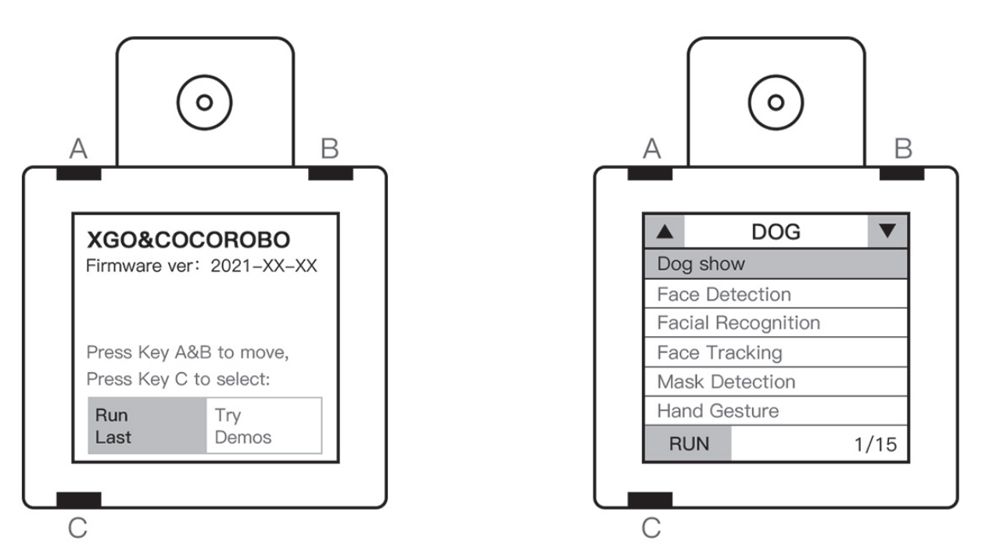

How to use
ON
Place the robot dog in a lying position to avoid the joints being stuck, then press the power switch on the back of the robot dog, the power ring light on the switch lights up, and the robot dog slowly stands, indicating that the boot is successful. 
OFF
Press the power switch on the back, the ring light starts to flash, the robot dog slowly falls down, and then the ring light goes out, indicating that the system is completely shut down. 
Charge
When the power of the robot dog is too low, the ring light of the robot dog switch button will flash and lie down, which means that the robot dog needs to be charged. Insert the lithium battery special charger into the charging port on the abdomen of the robot dog, and it can be fully charged in about 2 hours. The power indicator of the charger is red when charging, and the indicator turns green when fully charged. 
offline modee
The offline mode means that the robot dog can be operated and experienced by pressing the buttons on the AI module when it is separated from the mobile phone or computer.
Interface description
After laying the robot dog flat, press the power button, the robot dog enters the default standing initial state, and the screen lights up as shown in the figure below. There are 4 pieces of information in the initial interface that we need to master. The positions of the A, B and C keys on the module are shown in the figure below. 
- Firmware version: Indicates the firmware version number of the current AI module. You can download the latest version of firmware and tools from the official website.
- Operation instructions: A and B keys control the switching of menu options on the interface, C key means to confirm the operation, long press C key to exit the current program.
- Run the last program: When uploading the program to the AI module through programming, you can select this option to let the AI module run the latest uploaded program;
- Try the sample program: select this option, you can enter the next interface to experience the sample program stored in the SD card of the AI module.
Operation Introduction
According to the initial interface description, the operation module enters the sample program interface, and the key sequence should be: B→C. We use the A, B, C keys to operate the sample program list interface, A key: up a sample program, B key: down a sample program / page, C key: select the sample program and load, long press C key: exit Sample program to the main menu. The operation buttons of the sample program list interface are the same as the initial interface. There are 3 pieces of information that we need to master. 1. Types of sample programs: The sample programs are divided into visual and speech types. 2. Sample program list: The selected sample program will have a white box and its name will light up; 3. Sample program serial number: There are 17 sample programs in this firmware version. The number on the left side of the slash is the serial number of the selected sample program, and the number on the right side of the slash is the total number of sample programs.
Sample program
- Performance mode After entering the program, the screen module displays the expression animation cyclically, and the robot dog enters the performance mode (performs various actions).
- Face detection After entering the program, the AI module detects the face in the screen. If a face is detected, the screen module will use a rectangle to frame the face in the screen, and the robot dog will perform a handshake.
- Face recognition After entering the program, the AI module can recognize the face, frame it, and mark the key points; press the B key to take a picture of the face and mark it as master, a total of 3 face photos can be taken, respectively Labeled as master, friend1, friend2. When the camera captures the marked face again, the frame turns green and shows the mark and confidence (how much the face is the marked face). If the master face is recognized, the robot dog will perform a three-axis rotation. -Face follow After entering the program, the AI module performs face recognition, and according to the position of the face in the screen, the robot dog automatically adjusts the center of the screen to align the face to form the effect of following the face.
- Mask detection After entering the program, the AI module will perform mask detection to identify whether the person in the screen is wearing a mask; if it is detected that the person is not wearing a mask, the person will be marked with a red frame, and the detection reliability will be displayed. The dog performs a shaking action; if it detects wearing a mask, the portrait will be marked with a green frame, and the detection reliability will be displayed, and the robot dog will perform a nodding action; if the detection reliability is less than a certain value, it will be marked with a blue frame portrait.
- Boxing game After entering the program, the module will recognize the human hand in the screen, and according to the different gestures of the hand, the robot dog will display the picture that makes the robot dog guess the boxing victory. (In order to improve the recognition accuracy, please try to keep the background simple and bright enough when using it)
- Gesture recognition After entering the program, the module will recognize the human hand in the screen, and the robot dog will make different actions according to the different gestures of the hand. e.g. Gesture - action; fist - circle; rejection - lying down; scissor hand - three-axis linkage; number 6 - wave; ok - sit down. (In order to improve the recognition accuracy, please try to keep the background simple and bright enough when using it)
- Hand following After entering the program, the AI module will detect the hand, recognize the hand, and frame it. According to the position of the hand in the screen, the robot dog will automatically adjust the center of the screen to align the hand to form a follower hand. Effect.
- Traffic sign recognition After entering the program, the module starts to recognize the traffic signs. The identifiable signs include: "go straight", "stop", "no passage" and "stop" (see 1. Traffic signs below for signs); After being identified, the robot dog will perform corresponding actions: forward, stand, back, and sit.
- Traffic light recognition After entering the program, when the module recognizes the green light, it will be marked with a green sign on the screen, and the robot dog will start to go straight; when the module recognizes the red light, it will be marked with a red sign on the screen, and at the same time The robot dog stops moving.
- Object classification After entering the program, the AI module will identify common objects. If a common object is identified, it will be framed on the screen and the name of the identified object will be identified; if no common object is identified, it will prompt "Nothing Detected". In addition, when the recognized common object is a person ("person"), the robot dog will perform a rocking action; when the recognized common object is a dog ("dog"), the robot dog will perform a peeing action; when the recognized common object is For the cat ("cat"), the robot dog will perform a three-axis rotation.
- Bone recognition After entering the program, the screen prompts to take a picture of the bone, press the B button to take a picture of the bone (5 pictures in total), and then the screen prompts to take a picture of the green vegetable, press the B button to take the picture of the green vegetable (5 pictures in total). After the sampling is completed, the AI module will identify the bones and vegetables. When the bones are identified, a logo will appear on the screen, and the robot dog will perform the foraging action; when the vegetables are not found, the logo will appear on the screen, and the robot dog will perform the standing action.
- Area color analysis After entering the program, a color-picking area square will appear in the center of the screen, and the color values and corresponding color blocks in the area will be displayed at the top of the screen.
- Automatically learn and track the color After entering, the program first automatically captures and learns the color of the center area of the current screen (lasting about 2 seconds); then it enters the tracking stage, and detects and identifies the area in the screen with a similar color to the learning content.
- Color block tracking After entering the program, the module will recognize the color blocks (solid color squares) in the screen, and adjust its position according to the relative position of the color blocks and itself. (The brighter the color block, the better the effect)
- Find the QR code and decode it After entering the program, when the QR code (QR code) appears on the screen, the module will identify it and display the decoded text on the top. If the text content is some specific command statements (see 2. QR code below for details), the robot dog will perform corresponding actions.
- Mandarin recognition (cs) After entering the program, the AI module performs Mandarin recognition. There are various action command statements displayed on the screen. When the module recognizes the action command statement, the robot dog will execute the corresponding action.
- Audio analysis After entering the program, the screen module will display the audio collected by the microphone, and the robot dog will make different actions according to the audio, specifically: when the bass (red circle) is collected, the robot dog performs the action of lying down; Bass (green circle), the robot dog performs a stretching action; mid-high pitch (blue circle) is collected, the robot dog performs a sitting action; high pitch (purple circle) is collected, the robot dog performs a standing action.